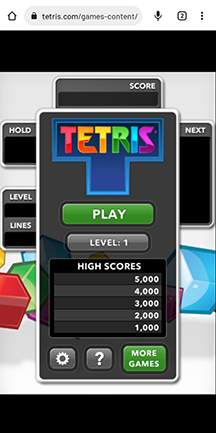
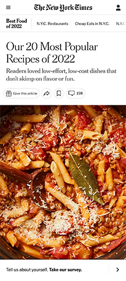
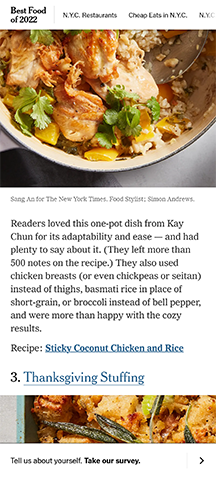

Hick's Law
This page has very simple choices. It shows male and female, and further divides that into three choices for male, and two choices for female.
This limitation on choices makes it easier and faster for users to make a decision and progress deeper into the website.
This can ultimately help translate into more sales as the user has few comparisons to make.
Fitts Law
Fitts Law is easily seen in mobile games. This game which can be played from the browser of your mobile phone highlights many of the concepts of Fitts Law.
For starters, the largest, most colorful button is the play button. The smaller, grey buttons on the bottom half of the screen are settings and help. Larger buttons are going to grab attention and are faster and more accurate to click.
The arrangement of the buttons is also clearly conducive to continuing play. You don't think too much about it, you just start a game. The start button is right in your field of view, and is easily accessible to any of your digits.
White Space and Clean Design
 This page has clean design clearly identifying individual subtopics in the article.
Each article has white space longer than a paragraph break to separate the text from a link to a recipe.
An even larger block of white space separates the link from the next subtopic.